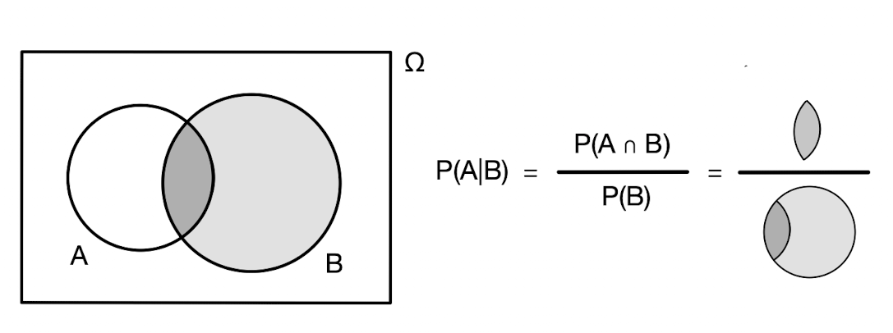
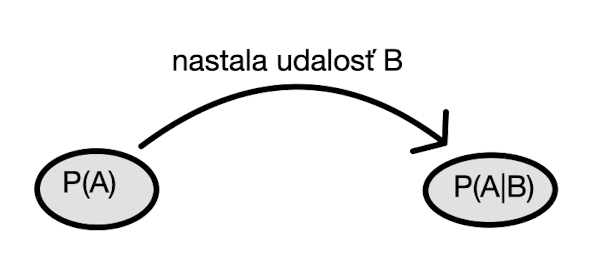
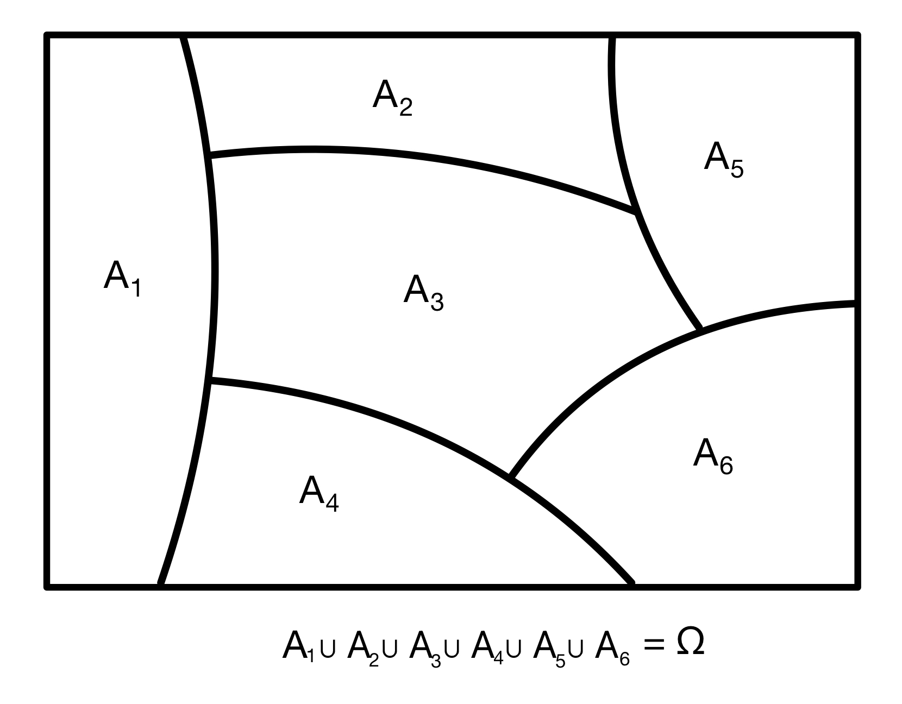
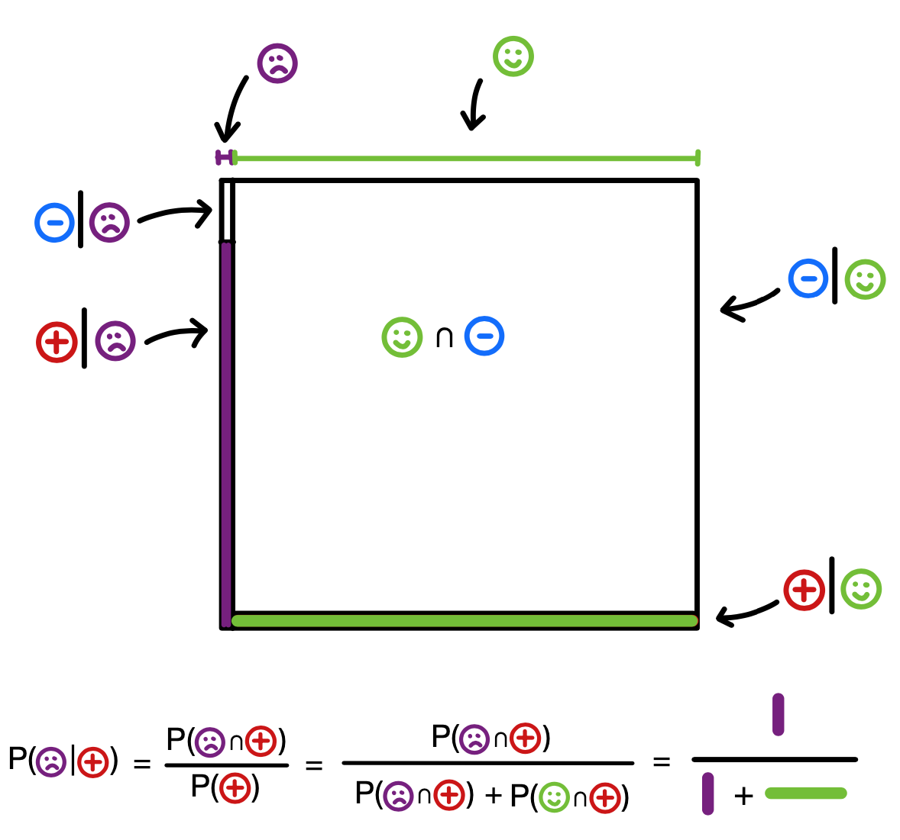
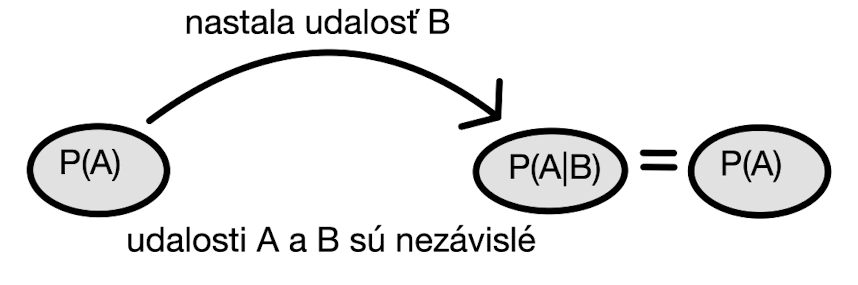

3 Podmienená pravdepodobnosť
Podmienená pravdepodobnosť je kľúčovým pojmom v teórii pravdepodobnosti. Vďaka nej môžeme skúmať súvzťažnosť rôznych udalostí - ako nastatie jednej udalosti ovplyvní pravdepodobnosť nastatia inej. Je neprekvapivé, že rôzne udalosti nenastávajú vo vákuu, ale navzájom spolu môžu súvisieť. A o tom to teraz bude. Ako tento súvis vyjadriť, porozumieť mu a matematicky ho formalizovať.
3.1 Čo je to podmienená pravdepodobnosť
Nech \(A\) a \(B\) sú udalosti a nech naviac \(P(B)>0\). Podmienenou pravdepodobnosťou udalosti \(A\) za podmienky, že nastala udalosť \(B\), nazývame nasledovnú kvantitu:
\[P(A|B) = \frac{P(A \cap B)}{P(B)}.\] Potrebovali sme uvažovať, aby platilo \(P(B)>0,\) nakoľko v inom prípade by podmienená pravdepodobnosť nebola dobre definovaná.1
Podmienená pravdepodobnosť je ohromne užitočný koncept. Hovorí nám napríklad o tom, ako v zmysle poznania novej informácie (dozvedeli sme sa, že nastala udalosť \(B\)) meníme to, čo si myslíme o pravdepodobnosti toho, že nastane udalosť \(A.\) Na začiatku by sme si boli mysleli, že šanca, že Slovensko vyhrá na MS v ľadovom hokeji je malá (\(P(A)\)). Avšak vidiac náš fantastický výkon v základnej skupine \(B\) sa teraz už nádejame, že zlato nie je až také márne (\(P(A|B) > P(A)\)).2

Example 3.1 Hádžeme dvoma férovými kockami. Pravdepodobnosť, že na nich padne súčet 4, \(P(A) = \frac{3}{36} = \frac{1}{12}.\) Aká je pravdepodobnosť, že padne súčet 4, ak vieme, že na prvej kocke padlo číslo 3?
Označme si rôzne udalosti:3
- A - na dvoch kockách padne súčet 4
- B - na prvej kocke padne číslo 3
Použitím vzťahu pre podmienenú pravdepodobnosť dostávame
\[P(A|B) = \frac{P(A \cap B)}{P(B)} = \frac{\frac{1}{36}}{\frac{1}{6}} = \frac{1}{6}.\]
Example 3.2 Majme triedu, v ktorej je 60% dievčat a 40% chlapcov. Nech 30% dievčat má dlhé vlasy a nech 20% chlapcov má dlhé vlasy. Náhodne vyberieme jednu osobu z tejto triedy. Aká je pravdepodobnosť, že má dlhé vlasy?
Uvažujme nasledovné značenie
- Ž - vybraná osoba je dievča
- M - vybraná osoba je chlapec
- D - vybraná osoba má dlhé vlasy
Zaujíma nás \(P(D)\), ale k dispozícii máme len \(P(Ž)=0.6,P(M)=0.4\), ale aj \(P(D|Ž)=0.3\) a \(P(D|M)=0.2.\)
Hneď vieme, \(P(D \cap Ž) = P(D|Ž)P(Ž) = 0.3 \cdot 0.6 = 0.18\) a \(P(D \cap M) = P(D|M)P(M) = 0.2 \cdot 0.4 = 0.08.\)
Nakoľko udalosti \(M\) a \(Ž\) sú disjunktné (\(Ž=M^C\)), musia byť aj udalosti \(D \cap Ž\) a \(D \cap M\) tiež disjunktné. Podľa spočitateľnej aditivity pravdpodobnosti teda máme: \[P(D) = P( \{D \cap Ž\} \cup \{D \cap M\} ) = P( D \cap Ž) + P( D \cap M) = 0.18 + 0.08 = 0.26.\]
3.2 Bayesova veta
Bayesova veta je jedným z najdôležitejších výsledkov v teórii pravdepodobnosti.
Uvažujme \(A_1\) a \(A_2\) disjunktné udalosti také, že \(\Omega = A_1 \cup A_2.\) To znamená, že nastane \(A_1\) alebo \(A_2 = A_1^C\), teda \(P(A_1) + P(A_2) = 1.\) Pre takéto množiny platí \[A = (A \cap A_1) \cup (A \cap A_2).\] Nakoľko aj množiny \(A \cap A_1\) a \(A \cap A_2\) sú tiež disjunktné, vďaka spočitateľnej aditivite pravdepodobnosti dostávame \[P(A) = P(A \cap A_1) + P(A \cap A_2).\] Využitím definície podmienenej pravdepodobnosti dospejeme k \[P(A) = P(A \cap A_1) + P(A \cap A_2) = P(A|A_1)P(A_1) + P(A|A_2)P(A_2).\] Aplikovovaním podmienenej pravdepodobnosti do pôvodného vzťahu máme \[P(A_1|A) = \frac{P(A_1 \cap A)}{P(A)} = \frac{P(A|A_1)P(A_1)}{ P(A|A_1)P(A_1) + P(A|A_2)P(A_2)}.\] Tomuto výsledku hovoríme Bayesova veta. V prípade, že máme viacej disjunktných udalostí \(A_1, A_2,\cdots,A_n\), takých, že \(\cup_{i=1}^{n} A_i = \Omega\) (takéto množiny nazývame rozklad množiny \(\Omega\)), podobným dôvodením dostávame: \[P(A_1|A) = \frac{P(A_1 \cap A)}{P(A)} = \frac{P(A|A_1)P(A_1)}{ \sum_{i=1}^{n}P(A|A_i)P(A_i)}.\]

Prečo je podmienená pravdepodobnosť a teda aj Bayesova veta dôležitá?
Example 3.3 Aby sme boli na tepe dňa, pozrime sa na príklad prudko aktuálny (začiatkom 2022). Uvažujme skríningové testovanie na nejakú chorobu a použime nasledovné značenie:
- \(\oplus\) - nech označuje pozitívny test,
- \(\circleddash\) - nech označuje negatívny test,
- \(Z\) - nech označuje, že človek je zdravý,
- \(CH\) - nech označuje, že človek je chorý.
Na základe skúmania odpadových vôd vieme, že prítomnosť choroby v populácii je \(1\%,\) teda \(P(CH) = 0.01 = 1- P(Z).\) Majme test o ktorom vieme, že pre chorého človeka dá pozitívny výsledok v 90% prípadov, tomuto sa hovorí senzitivita testu, matematicky to zapíšeme ako \(P(\oplus|CH)=0.9\). Tento test dá naviac správny negatívny výsledok v prípade zdravého človeka v 99% prípadov (špecificita testu), takže \(P(\circleddash|Z)=0.99 = 1-P(\oplus|Z)\). Teraz praktický príklad: náhodne vybraného človeka budeme testovať, test vyjde pozitívny. Aká je pravdepodobnosť, že tento človek je skutočne pozitívny? Ešte predtým, než sa pozrieme nižšie, predstavme si túto situáciu a tipnime si výsledok.
Pozrime sa na to bližšie:
\[\begin{eqnarray*} P(CH|\oplus) &=& \frac{P(CH \cap \oplus)}{P(\oplus)} = \frac{P(\oplus|CH)P(CH)}{ P(\oplus|CH)P(CH) + P(\oplus|Z)P(Z)}\\ &=& \frac{0.9 \cdot 0.01}{0.9 \cdot 0.01 + 0.01 \cdot 0.99} = 0.476. \end{eqnarray*}\]Teda je približne 48%. Menej než polovica. Toto je výrazne menej ako väčšina ľudí čaká (tip: vyskúšajte to aj na lekárov). Tuto je nesmierne dôležité zdôrazniť, že išlo o skríningové testovanie.4
Ak by sme napríklad testovali len ľudí s príznakmi, už by neplatilo, že \(P(CH)=0.01\), ale bolo by to výrazne viacej. Ľudia s príznakmi totiž nie sú rovnakí ako tí náhodne vybraní z populácie.5
Vráťme sa naspäť k tomu, prečo je tých 48% tak prekvapivo veľa. Je to člen \(P(\oplus|Z)P(Z)\) v menovateli v zlomku na výpočet \(P(CH|\oplus).\) Síce je pravdepodobnosť \(P(\oplus|Z)\), teda falošnej pozitivity, veľmi malá, ale zdravej populácie je veľká väčšina \(P(Z)=0.99.\)

Example 3.4 Majme dve vrecká s guličkami. V prvom je 7 červených a 2 modré guličky. V druhom vrecku je 5 červených a 9 modrých guličiek. Náhodne vyberieme jedno z vreciek (s pravdepodobnosťou 1/2) a z neho jednu z guličiek. Ukáže sa, že je červená. Aká je pravdepodobnosť, že táto gulička pochádza z prvého vrecka?
Označme si udalosť, že vyberáme z vrecka 1 ako \(V_1\) a že z vrecka 2 ako \(V_2.\) Na základe predpokladu vieme, že \(P(V_1) = P(V_2) = \frac{1}{2}.\) Ďalej označme udalosť, že vyberieme červenú guličku ako \(Č\). Priamočiarym použitím Bayesovej vety dostávame: \[P(V_1|Č) = \frac{P(Č|V_1)P(V_1)}{P(Č|V_1)P(V_1)+P(Č|V_2)P(V_2)} = \frac{\frac{7}{9}\frac{1}{2}}{\frac{7}{9}\frac{1}{2} + \frac{5}{14}\frac{1}{2}} \approx 0.685.\]
3.3 Nezávislosť
Nezávislosť dvoch udalostí nám hovorí čosi o tom, ako tieto udalosti nastávajú. To, či nastane jedna udalosť vôbec nijakovsky nesúvisí s tým, či nastane druhá udalosť. Teda inými slovami, nenastávajú naraz ani nenastávajú opačne, skrátka a dobre, obe udalosti si žijú svoj vlastný život a ich nástávanie/nenastávanie sa deje úplne oddelene. Tu treba dať pozor. Nehovoríme o žiadnej príčinnosti. V období, keď je najviac útokov žralokov na človeka, sú aj rekordné predaje zmrzliny. Tieto udalosti sú závislé. Ale to neznamená, že nejak spolu kauzálne súvisia, vôbec nie. Skôr ide o to, že tieto udalosti sú prepojené cez nejakú inú udalosť. V lete, keď je pekne, ľudia sú vonku a kúpu sa, je prirodzene väčšia šanca útoku žraloka ako v zime, keď sú turisti doma.
Dve udalosti \(A\) a \(B\) nazývame nezávislé ak platí \[P(A \cap B) = P(A)P(B).\] Súbor udalostí \(A_1, A_2, \cdots\) nazývame nezávislý ak platí
\[P(A_{i_1} \cap \cdots \cap A_{i_j}) = P(A_{i_1}) P(A_{i_2}) \cdots \cdot P(A_{i_j}).\] pre akýkoľvek konečný podsúbor udalostí \(A_{i_1},A_{i_2} \cdots A_{i_j}.\)
Pre nezávislé udalosti \(A,B\) platí, že vedomosť o tom, že udalosť \(B\) nastala nijakovsky neovplyvní pravdepodobnosť, že nastane udalosť \(A\).
\[P(A|B) = \frac{P(A \cap B)}{P(B)} = \frac{P(A)P(B)}{P(B)} = P(A).\]

Nezávislosť udalostí \(A\) a \(B\) sa dá preto alternatívne zadefinovať aj pomocou vzťahu
\[P(A|B)= P(A).\] To, že dve udalosti sú závislé, znamená, že nastatie jednej udalosti nesie nejakú informáciu o tej druhej udalosti. Môže ju zvýšiť alebo znížiť.
Koncept nezávislosti sme doteraz neformálne používali pri rôznych príkladoch s kockami, s mincami, či s kartami. Teraz sme si tento pojem formalizovali.
Example 3.5 Uvažujme pravdepodobnostný priestor \(([0,1],\mathcal{F},P),\) kde \(P\) priradí každému intervalu jeho dĺžku a \(\mathcal{F}\) je množina všetkých udalostí, ktorým vieme priradiť pravdepodobnosť.6 Majme nasledovné dve udalosti \(A = \left(\frac{1}{2},\frac{3}{4}\right)\) a \(B = \left(0,\frac{2}{3}\right).\) Sú tieto udalosti nezávislé?
Na prvý pohľad by sa možno zdalo, že nie. Lebo nie sú disjunktné. Alebo? Pozrime sa na to bližšie. \[\begin{eqnarray*} P(A \cap B) &=& P\left( \left(\frac{1}{2},\frac{3}{4}\right) \cap \left(0,\frac{2}{3}\right) \right) = P\left( \left(\frac{1}{2},\frac{2}{3}\right) \right) = \frac{1}{6} \\ P(A) P(B)&=& P\left( \left(\frac{1}{2},\frac{3}{4}\right) \right) P\left( \left(0,\frac{2}{3}\right) \right) = \frac{1}{4}\frac{2}{3} = \frac{1}{6} \end{eqnarray*}\] Takže tieto udalosti \(A\) a \(B\) vskutku sú nezávislé. No lebo spĺňajú definíciu nezávislosti. Pre disjunktné množiny platí, že pravdepodobnosť zjednotenia množín je súčet pravdepodobností množín. Toto je však niečo iné ako nezávislosť.
3.4 Podmienená pravdepodobnosť je tiež pravdepodobnosť
Na podmienenú pravdepodobnosť sa môžeme pozerať ako na pravdepodobnostnú funkciu na tom istom pravdepodobnostom priestore. \[P^*(A) = P(A|B) = \frac{P(A \cap B)}{P(B)}.\] Poľahky môžeme overiť tri vlastnosti, ktoré musí spĺňať každá pravdepodobnostná funkcia:
- \(P^*(A) \geq 0\) pre všetky udalosti \(A\) platí triviálne, lebo \(P(A \cap B) \leq P(B)\) kvôli tomu, že \(A \cap B \subset B\)
- \(P^*(\Omega) = \frac{P(\Omega \cap B)}{P(B)} = \frac{P(B)}{P(B)} = 1.\)
- \(P^*\left(\cup_{i=1}^{\infty} A_i\right) = \frac{P\left(\cup_{i=1}^{\infty} A_i \cap B \right)}{P(B)} = \sum_{i=1}^{\infty} \frac{P\left(\cup_{i=1}^{\infty} A_i \cap B \right)}{P(B)} = \sum_{i=1}^{\infty} P^*(A_i)\) pre akékoľvek disjunktné udalosti \(A_1, A_2, A_3,\dots\). Prostredná nerovnosť platí, lebo aj množiny \(A_1 \cap B, A_2 \cap B, A_3 \cap B, \cdots\) sú tiež disjunktné a len sme využili vlastnosť spočitateľnej aditivity pôvodnej pravdepodobnostnej funkcie \(P\).
Pre fixnú udalosť, pre ktorú platí \(P(B)>0\), sa teda podmienená pravdepodobnosť správa ako každá iná pravdepodobnostná funkcia. Všetky vlastnosti, ktoré sme odvodili pre pôvodnú pravdepodobnostú funkciu z prvotných princípov, budú preto platné aj pre podmienenú pravdepodobnosť.7
3.5 Zhrnutie
Podmienená pravdepodobnosť je nástroj, ktorý nám umožnuje kvantifikovať, ako meníme pravdepodobnosť nejakej udalosti vo svetle novej informácie. Bayesova veta nám dáva vzťah na výpočet podmienenej pravdepodobnosti. Častokrát vedie k výsledkom, ktoré sú na prvý pohľad prekvapivé.
3.6 Cvičenia
Exercise 3.1 Aký má vplyv
- zvýšenie senzitivity \(P(P|CH)\),
- zvýšenie špecificitu \(P(N|Z)\),
- zvýšenie incidencie choroby \(P(CH)\)
na \(P(CH|P)\)? Vysvetlite aj na intuitívnej úrovni.
Exercise 3.2 Hádžeme tromi nezávislými férovými kockami. Vypočítajte, o koľko percent sa zväčší/zmenší pravdepodobnosť toho, že padne súčet 12 po tom, ako sa dozvieme, že na jednej z nich padlo číslo 4.
Exercise 3.3 Ukážte, že ak sú udalosti \(A\) a \(B\) nezávislé, potom sú aj udalosti \(A\) a \(B^C\) nezávislé.
Nájdite taký príklad pravdepodobnostného priestoru a udalostí \(A_1, A_2, A_3\), kde súčasne platí
- \(A_1\) a \(A_2\) sú nezávislé,
- \(A_2\) a \(A_3\) sú nezávislé,
- \(A_1\) a \(A_3\) sú nezávislé,
- \(A_1, A_2, A_3\) nie sú nezávislé.
Exercise 3.4 Uveďte príklad pravdepododobnostného priestoru a nejakých udalostí \(A_1\), \(A_2\), \(A_3\), \(A_4\) tak, aby platilo súčasne
- \(P(A_1|A_2) > P(A_1),\)
- \(P(A_2|A_3) > P(A_2),\)
- \(P(A_3|A_4) > P(A_4).\)
Ak sa to nedá, tak to dokážte.
Exercise 3.5 Nech je
- pravdepodobnosť, že sneží 20%,
- pravdepodobnosť nehody 10%,
- podmienená pravdepodobnosť nehody, ak sneží, 40%.
Aká je pravdepodobnosť, že sneží, ak vieme, že nastala nehoda?
Exercise 3.6 Máme 3 bezpečnostné systémy, tri rôzne vrstvy ochrany nášho počítačového programu. Ak zlyhá prvý (s pravdepodobnosťou 0.03), aktivuje sa druhý, ktorý zlyhá s pravdepodobnosťou 0.01. V prípade zlyhania druhého je pravdepodobnosť zlyhania posledného 0.05. Aká je pravdepodobnosť, že zlyhajú všetky tri bezpečnostné systémy?
Exercise 3.7 Dve výrobné linky produkujú ten istý typ súčiastky. Prvá linka vyrobí 10000 súčiastok týždenne a 1000 je chybných. Druhá linka vyrobí 20000 súčiastok a z nich je 1500 chybných. Aká je šanca, že náhodne vybratá súčiastka bude chybná? Vybrali sme chybnú súčiastku. Aká je pravdepodobnosť, že pochádza z prvej výrobnej linky?
Exercise 3.8 Na západnom Slovensku (2.5mil. obyvateľov) má 33% ľudí VŠ vzdelanie, na stredom Slovensku (1.5mil. obyvateľov) má 20% ľudí VŠ vzdelanie a na východnom Slovensku (1.8mil. obyvateľov) je to 22%. Náhodne vybraný človek nemá VŠ vzdelanie. Aká je pravdepodobnosť, že pochádza zo západného Slovenska?
Exercise 3.9 Uvažuje test na tuberkulózu, ktorého senzitivita aj špecificita sú 99%. Skutočná prevalencia tuberkulózy v populácii nech je 0.00004. Aká je pravdepodobosť, že náhodne vybraný človek má tuberkulózu, ak má pozitívny test?
Exercise 3.10 Malá firma vyhodnotila, že so 75% svojich zamestnancov je spokojná. Zistilo sa, že z týchto malo až 80% predošlú pracovnú skúsenosť. Z tých ostatných zamestnancov, s ktorými firma nebola spokojná to bolo len 15%. Firma práve zamestnala nového pracovníka, ktorý mal predošlú pracovnú skúsenosť. Aká je pravdepodobnosť, že s ním firma nebude spokojná?
Exercise 3.11 Desať percent pacientov vstupujúcich na kliniku má poškodenú pečeň. Päť percent týchto pacientov je alkoholikov. Z tých pacientov, ktorí majú poškodenú pečeň, je 7% alkoholikov. Aká je pravdepdoobnosť, že pacient, ktorý je alkoholik má poškodenú pečeň?
Exercise 3.12 Nech je pravdepodobnosť, že náš vlak bude meškať 60%. Aká je šanca, že prídeme tam aj späť načas, bez meškania?
Exercise 3.13 Na pošte je dlhý rad. Pravdepodobnosť, že požiadavka každého čakajúceho bude vyriešená do 1 minúty je 10%. Aká je pravdepodobnosť, že každý zo 17 ľudí v rade predo mnou bude obslúžený do jednej minúty?
Exercise 3.14 Na predpandemickej párty (offline) sa stretne \(n\) ľudí. Aké je najmenšie \(n\) také, aby bola šanca, že aspoň jedna dvojica má narodeniny v ten istý deň väčšia ako 50? (Pomôcka: samozrejme prekvapivo malá, inak by sa to nevolalo paradox.) Predpokladajme, že každý jeden človek má pravdepodobnosť práve \(\frac{1}{365},\) že sa narodí v nejaký konkrétny deň, ignorujúc prestupné roky.
Exercise 3.15 Kedysi išla v televízii nasledovná súťaž o auto. Boli troje dverí, A, B, C. Za dvoma z týchto troch dverí bola koza, za jednými dverami bolo auto. Súťažiaci si vybral jednu z týchto dvoch dverí. Moderátor potom otvoril jedny z tých dvoch dverí, ktoré si súťažiaci nevybral a za nimi bola vždy koza. Zostali tak už iba dvoje dverí. Súťažiaci si v druhom kole mohol vybrať z dvoch možností: (1) zostane na svojom pôvodnom tipe, (2) zmení svoje rozhodnutie na tie druhé dvere, ktoré ešte ostali neotvorené.
Ktorá z možností (1) alebo (2) je lepšia? Alebo sú rovnocenné?
(Zaujímavosťou je, že v tejto štúdii výskumníci ukazujú, že holuby rozumejú Monty Hall problému lepšie ako ľudia…)
Exercise 3.16 V rodine sú dve deti. Vieme, že jedno z nich je dievča. Aká je pravdepodobnosť, že obe sú dievčatá?
V rodine sú dve deti. Jedno dieťa sa volá Gertrúda. Aká je pravdepodobnosť, že obe sú dievčatá?
Neskôr, ale v inom kurze sa dozvieme, že sa dá podmieňovať aj udalosťami, ktorých pravdepodobnosť je priamo nula. Toto je zaujímavé uvažovať vo finančných aplikáciách. Kým pravdepodobnosť, že v nejakom konkrétnom okamihu bude cena ropy presne 100$ za barel je nula, neznamená to, že je neužitočné uvažovať o tom, aká by bola pravdepodobnosť nejakej inej udalosti, ak by cena ropy naozaj bola práve 100$ za barel. A presne na to nám bude treba poznať trochu viacej štruktúry ako sa učíme teraz.↩︎
Update 18.2.2022: Bronz nie je až taký márny.↩︎
Akonáhle máme udalosti poriadne označené, polovicu riešenia máme za sebou. Tento prechod od písaného textu do matematického zápisu je kľúčový ale našťastie sa dá do veľkej miery natrénovať.↩︎
Tieto čísla sú veľmi blízke tým zo skríningového testovania na školách na COVID19 v ČR v januári 2022.↩︎
Skríningové testovanie sa odporúča aj pri niektorých typoch rakoviny, kde je skoré zachytenie dôležité pre dobrú prognózu. Vždy však treba brať do úvahy náklady spojené s množstvom falošne pozitívnych prípadov alebo s množstvom prípadov, kde pacient podstúpil náročnú liečbu napriek tomu, že by sa rakovina nemusela počas celého života pretaviť do problémov (keď človek umrie na inú diagnózu).↩︎
Pravdepodobnosť na takomto pravdepodobnostnom priestore sa nazýva Lebesgueova miera na \([0,1]\) a v tomto prípade platí \(\mathcal{F} \neq 2^{\Omega}\) a \(\mathcal{F}\) je množina Lebesgueovsky merateľných množín. Do väčších podrobností sa zahĺbite v rámci kurzov Teória miery a integrálu a Teória pravdepodobnosti.↩︎
Neskôr sa tiež dozvieme, že množina podmnožín \(\Omega\), teda \(\mathcal{F},\) môže byť pri podmieňovaní vo všeobecnosti menšia ako celá množina všetkých podmnožín \(2^{\Omega}.\)↩︎